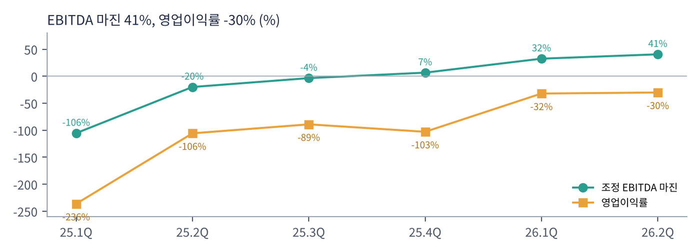

네비우스는 러시아 기술 기업 얀덱스가 2024년 러시아 사업을 매각하고 남은 해외 자산으로 만든 회사다. 창업자 아르카디 볼로즈가 CEO다. 핀란드·네덜란드·미국 등에 GPU 데이터센터를 짓고 AI 기업에 연산을 빌려준다. 2025년 9월 마이크로소프트와 최대 $174억 규모의 GPU 공급 계약을 맺으며 주목받았다(당시 발표). 자율주행 회사 아브라이드, 교육 회사 트리플텐, 클릭하우스·톨로카 지분도 갖고 있다.
| 항목 | 내용 |
|---|---|
| 종목 | Nebius Group N.V. (NBIS) · AI 클라우드 · 본사 네덜란드 암스테르담 |
| 경영진 | 아르카디 볼로즈 창업자 겸 CEO |
| 시가총액 | 약 $352억 (트레이딩뷰, 11/6 종가 기준). 순손실이라 PER 없음 |
| 최근 분기(2Q26) | 매출 $5.82억(+454%), 조정 EBITDA $2.36억 |
| 발행 주식 | 약 2.72억 주(A 2.38억 + B 0.33억, B는 의결권 강화) |
| 분기 | 매출 | 조정 EBITDA | 영업이익 | 계속영업 순이익 | 설비투자 | 특이 사항 |
|---|---|---|---|---|---|---|
| 2024.3Q | $0.32억 | -$0.46억 | — | -$0.44억 | — | |
| 2024.4Q | $0.35억 | -$0.64억 | -$1.37억 | -$1.23억 | $4.2억 | |
| 2025.1Q | $0.51억 | -$0.54억 | -$1.20억 | -$1.04억 | $5.4억 | |
| 2025.2Q | $1.05억 | -$0.21억 | -$1.11억 | $5.03억 | $5.1억 | 지분 평가이익 |
| 2025.3Q | $1.46억 | -$0.05억 | -$1.30억 | -$1.20억 | $9.6억 | MS 계약 |
| 2025.4Q | $2.28억 | $0.15억 | -$2.35억 | -$2.50억 | $20.6억 | EBITDA 흑자 |
| 2026.1Q | $3.99억 | $1.30억 | -$1.28억 | $6.21억 | $24.7억 | 지분 평가이익 $7.8억 |
| 2026.2Q | $5.82억 | $2.36억 | -$1.76억 | -$1.90억 | $56.6억 | 설비투자 급증 |

매출이 분기마다 50% 안팎씩 늘었다. 2Q26 매출은 전 분기보다 46%, 1년 전보다 454% 늘었다. 조정 EBITDA는 4Q25에 처음 흑자로 돌아선 뒤 두 분기 만에 마진 41%가 됐다. 코어위브(59%)보다는 낮지만 규모가 커지면서 빠르게 올라오고 있다.
순이익은 지분 평가이익 때문에 흔들린다. 2Q25 순이익 $5.0억과 1Q26 순이익 $6.2억은 클릭하우스 등 보유 지분의 평가이익($6~8억)이 반영된 결과다. 본업은 영업손실 상태다. 감가상각비가 분기 $2.6억으로 매출의 45%에 이르기 때문이다.


설비투자가 매출을 압도한다. 2Q26 설비투자 $56.6억은 연환산 매출($23억)의 2.4배다. 다만 영업현금이 2분기 연속 $22억 이상 들어왔는데, 고객이 미리 낸 선수금 덕분이다. 이연 매출(선수금)은 연초 $15.8억에서 $59.8억으로 4배가 됐다. 마이크로소프트 같은 대형 고객이 GPU 용량을 확보하기 위해 돈을 먼저 내는 구조로 보인다.
| 항목 | 금액 | 의미 |
|---|---|---|
| 현금 | $80.4억 | 연초 $36.8억에서 증가 |
| 유형자산 | $130.5억 | 연초 $55.5억에서 2.4배 |
| 차입금 | $85.5억 | 대부분 전환사채(주식 전환 가능) |
| 이연 매출(선수금) | $59.8억 | 고객이 미리 낸 돈 |
| 자기자본 | $103.4억 | 부채비율 약 1.7배(코어위브 약 14배) |
트레이딩뷰 NBIS 일봉 300개(2025.8 ~ 2026.11.6)와 주봉으로 계산했다. 결론부터 말하면 2025년 9월 마이크로소프트 계약 이후 $65 → $300(4.6배)까지 오른 뒤, 10월 둘째 주부터 4주 만에 $255 → $113(-56%)으로 떨어졌다.


위: 주봉 재구성 차트. 아래: 트레이딩뷰 일봉 캡처(작도 없이 이동평균선·볼린저밴드만 표시).
| 이동평균 | 값 | 종가 대비 | 해석 |
|---|---|---|---|
| 5일선 | $136.9 | -5.4% | 금요일 반등으로 근접 |
| 20일선 | $165.2 | -21.6% | 10월 갭 |
| 50일선 | $201.7 | -35.8% | |
| 100일선 | $211.3 | -38.7% | 8~10월 박스 중심 |
| 200일선 | $178.4 | -27.4% | 10월 말 이탈 |
주봉 흐름: 2025년 9월 둘째 주 마이크로소프트 계약으로 $65 → $100(+38%) → 10월 $141 → 11월 $78 → 2026년 1~3월 $74~117 → 4월 $107 → $169 → 5~6월 $300(6/22 고점) → 7월 $146 → 8월 2분기 실적 주 +49%($186 → $279) → 9~10월 초 $220~255 → 10월 둘째 주 -25%, 이후 3주 연속 하락, 11월 첫 주 장중 $113 → $129.5 마감.
| 규칙 | 기준 | 현재 값 | 신호 |
|---|---|---|---|
| 장기 추세 필터 | 종가 vs 200일선 | $129.5 < $178.4 | 매도 |
| 중장기 교차 | 50일선 vs 200일선 | $201.7 > $178.4 | 매수 |
| 단기 교차 | 20일선 vs 50일선 | $165.2 < $201.7 | 매도 |
| 돈키언 채널 | 55일 고가 $255.1 / 저가 $113.3 | 중간값 $184.2 아래 | 매도 |
| 1개월 모멘텀 | 21거래일 수익률 | -41.1% (기준 $219.7) | 매도 |
| 3개월 모멘텀 | 63거래일 수익률 | -29.7% (기준 $184.1) | 매도 |
| 6개월 모멘텀 | 126거래일 수익률 | -26.9% (기준 $177.1) | 매도 |
| 12개월 모멘텀 | 252거래일 수익률 | +10.7% (기준 $117.0) | 매수 |
| 종합 (8개 평균) | -0.50 | 매도 | |
해석: 12개월 모멘텀은 기준가($117)에 가까워 $117 아래로 내려가면 바로 매도로 바뀐다. 50일선도 200일선을 향해 빠르게 내려오고 있어, 며칠~몇 주 안에 -0.75~-1.00으로 떨어질 가능성이 크다. 14일 ATR $15.7(12.1%). 실적 발표일에는 ±20% 이상도 가능하다(8월 실적 주 +49%).
| 가격 | 무엇이 바뀌나 | 의미 |
|---|---|---|
| $117 이탈 | 12개월 기준가 | 마지막 모멘텀 매수 신호 소멸 |
| $137 ~ 165 | 5일선, 20일선, 10월 갭 | 단기 반등 확인 구간 |
| $178 ~ 184 | 200일선, 돈키언 중간값, 3개월 기준 | 3개 신호 매수 전환 |
| 구분 | 가격대 | 근거 |
|---|---|---|
| 저항 2 | $155 ~ 165 | 10월 말 박스, 20일선 |
| 저항 1 | $137 ~ 145 | 5일선, 4월 돌파 구간 |
| 지지 1 | $113 ~ 117 | 11월 저점, 12개월 기준가 |
| 지지 2 | $90 ~ 100 | 2026년 1~3월 박스 상단 |
기본 판단: 같은 GPU 클라우드라도 코어위브보다 재무는 탄탄하다. 자기자본 $103억, 부채비율 1.7배, 고객 선수금 $60억은 코어위브(자기자본 $50억, 부채비율 14배)보다 훨씬 안정적이다. 그러나 주가는 같은 업종의 신용 우려에 함께 묶여 움직인다. 트레이딩뷰 요약에 따르면 시장은 3분기 매출 약 $9.1억을 기대하고 있다. 2분기 대비 +56%라는 높은 기대다.
| 가격대 | 시나리오 | 대응 |
|---|---|---|
| $165 이상 | 단기 추세 회복 | 2차 익절 |
| $137 ~ 145 | 반등 확인 | 1차 익절 |
| $113 ~ 135 | 실적 전 바닥 탐색 | 관망 (실적 후 판단) |
| $108 이하 종가 | 지지 붕괴 | 손절 |
| 구성 | 돈을 버는 방식 |
|---|---|
| AI 클라우드 (핵심) | GPU 클러스터 장기 계약(마이크로소프트 등 대형 고객), 셀프서비스 GPU 임대, 추론 플랫폼 '토큰 팩토리'(토큰당 과금) |
| 아브라이드 | 자율주행차·배달 로봇 개발 |
| 트리플텐 | IT 직무 재교육 온라인 교육 |
| 지분 투자 | 클릭하우스, 톨로카 지분(평가이익이 순이익을 흔드는 원인) |
네비우스는 '대형 고객 계약 + 중소 개발자 플랫폼'을 동시에 한다. 코어위브가 대형 AI 연구소 중심이라면, 네비우스는 대형 계약(마이크로소프트·메타)과 함께 AI 스타트업·개발자가 직접 쓰는 셀프서비스 클라우드와 추론 플랫폼(토큰 팩토리)을 키우고 있다. 10월 추론 기술 회사 인퍼라이즈 인수도 그 연장선이다.
회사 소개가 목표를 요약한다. "네비우스는 개발자와 기업이 AI의 미래를 직접 책임질 수 있도록 데이터와 모델 학습부터 실제 배포까지 풀스택 플랫폼을 만들고 있다."
| 축 | 내용 |
|---|---|
| 풀스택 AI 클라우드 | GPU 인프라 + 학습·추론 소프트웨어 + 데이터 도구까지 직접 개발(얀덱스 출신 엔지니어 역량) |
| 소버린 AI | 팔란티어가 네비우스를 자사 고객용 소버린 AI 인프라 파트너로 지정(9월). 유럽·미국 정부·기업의 '데이터 주권' 수요 |
| 추론 시장 | 토큰 팩토리로 추론을 토큰 단위로 판매. 인퍼라이즈 인수로 기술 강화 |
| 자금 조달 다변화 | 전환사채, 자사주 매각, 워런트, 시티 $35억 약정 등 |
| 항목 | 내용 | 읽는 법 |
|---|---|---|
| 성장 | 상반기 매출 $9.81억(+529%), 조정 EBITDA $3.66억(전년 -$0.75억) | 흑자 전환 가속 |
| 선수금 | 이연 매출 $59.8억(연초 $15.8억). 상반기 선수금 증가 $44억 | 수요는 고객이 먼저 돈을 낼 만큼 강함 |
| 시장 기대 | 3분기 매출 약 $9.1억 예상(트레이딩뷰 요약) | 높은 기대가 부담 |
상세한 경영진 코멘트와 가이던스는 분기 주주서한과 컨퍼런스콜에서 제시돼 이번 자료(보도자료)에는 포함되지 않았다. 숫자로 보이는 수요 신호는 선수금이다. 고객이 GPU 용량을 확보하려고 수십억 달러를 미리 낸다는 것은 공급이 수요를 못 따라간다는 뜻이다.
유형자산이 6개월 만에 $56억에서 $130억으로. 핀란드·네덜란드·미국(뉴저지·캔자스시티 등) 데이터센터 확장. 감가상각비 분기 $2.6억(+245%).
매출 대비 원가 23%, 연구개발 33%, 판관비 30%, 감가상각 45%. 규모가 커질수록 비율이 빠르게 내려가고 있다(1년 전 총비용 매출의 206% → 130%).
상반기 재무활동 현금 $91.6억. 전환사채·주식 매각이 섞여 있어 희석 가능성이 있다.
비상장 지분 $16.1억(클릭하우스 등). 필요하면 자금원으로 쓸 수 있다.
| 경쟁/리스크 | 내용 | 강도 |
|---|---|---|
| 설비투자 부담 | 분기 $56억, 연환산 매출의 2.4배. 자금 조달 지속 필요 | 높음 |
| 고객 집중 | 대형 계약(마이크로소프트 등) 비중이 큼 | 중간~높음 |
| 희석 | 전환사채·워런트·주식 매각 | 중간 |
| 경쟁 | 코어위브, 하이퍼스케일러, 오라클, 람다 등 | 중간 |
| 지배구조 | B주 의결권 강화로 창업자 지배. 러시아 출신 이미지에 대한 일부 우려 | 참고 |
3일 뒤 실적에서 매출 $9억 내외 달성과 2027년 용량·설비투자 계획이 핵심이다. 실적 전 신규 진입은 위험하다.
선수금 기반 성장과 낮은 부채비율은 GPU 클라우드 중 가장 좋은 재무 구조다. 감가상각이 매출 대비 내려가는 2027년 이후 영업이익 흑자 전환이 가능하다.